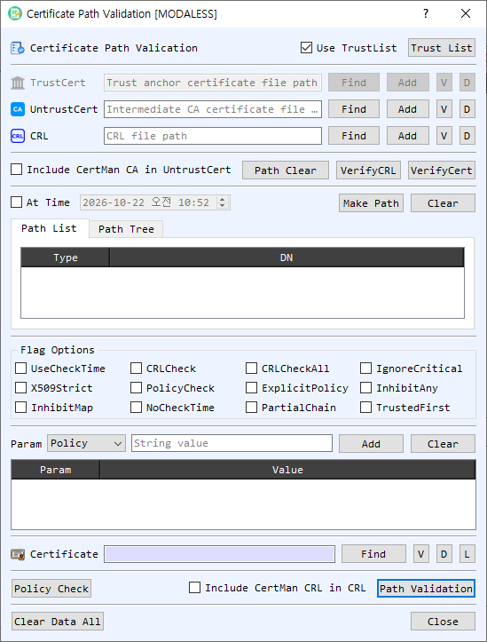

Certificate Path Validation Dialog Guide
The Certificate Path Validation dialog helps build and inspect a certificate chain, validate a target certificate, check certificate policies, and verify CRLs. It can use certificates and CRLs selected from files or stored in BerEditor's CertMan lists.

Figure 1. Certificate Path Validation dialog. Supply trust and revocation data, select a target certificate, then build or validate its certificate path.
Screen Areas
- Use TrustList / Trust List — Enable Use TrustList to validate against BerEditor's configured trust list. Trust List opens CertMan's root CA list. When disabled, provide a specific TrustCert file for the operation.
- TrustCert, UntrustCert, and CRL — Select files with Find or choose entries from CertMan with Add. V opens certificate or CRL information; D decodes the selected file in BerEditor. TrustCert supplies trust anchors, UntrustCert supplies certificates treated as untrusted, and CRL supplies revocation information.
- Include CertMan CA in UntrustCert — Includes CertMan CA certificates in the untrusted certificate input for path validation.
- Path Clear / VerifyCRL / VerifyCert — Path Clear clears the displayed path. VerifyCRL checks a CRL against the selected trust or untrusted certificate. VerifyCert checks the selected certificate using the trust, untrusted, and optional CRL inputs.
- At Time / Make Path / Clear — Enable At Time to use the selected date and time for path checks. Make Path builds a chain for the target certificate; Clear clears the path list and tree.
- Path List / Path Tree — View the built chain as a table or hierarchical tree. Double-click an entry to view its details. Right-click for available item actions.
- Flag Options — Configure certificate-path verification behavior, including CRL checking, policy checks, critical-extension handling, strict X.509 processing, time checks, partial chains, and trust-anchor selection. Use flags only when their validation behavior is intended.
- Param — Add verification parameters such as Policy, Purpose, Name, Depth, AuthLevel, HostName, Email, and IP, with a corresponding value. Add appends the selected parameter; Clear removes the parameter list. Right-click table entries for item actions.
- Certificate target — Select the target certificate with Find or L (select from CertMan). The subject DN appears in the adjacent field. V views certificate details and D decodes it in BerEditor.
- Policy Check / Path Validation — Run a policy check or validate the target's certificate path using the selected inputs, flags, parameters, and time options. Include CertMan CRL in CRL adds CertMan CRLs to path validation.
- Clear Data All / Close — Clear the dialog's inputs and results or close the dialog.
Build a Certificate Path
- Select a target certificate using Find or L. The subject DN confirms the selected target.
- Enable Use TrustList to use the configured trust list, or select a TrustCert file for a specific trust anchor.
- Add any relevant UntrustCert certificates and CRL data. To use CertMan's stored CA or CRL data, enable the applicable inclusion option.
- If required, enable At Time and set the validation date and time. Configure any needed verification flags and parameters.
- Select Make Path. Review the resulting chain in Path List or Path Tree. When online CA/CRL retrieval is enabled in BerEditor settings, path construction may retrieve issuer or status data online.
Validate a Certificate or Check a CRL
- To check the target certificate, select the certificate and configure the trust and revocation inputs, then select VerifyCert. Review the result reported in the log.
- To verify a CRL, provide a CRL and its issuing certificate as TrustCert or UntrustCert, then select VerifyCRL.
- To perform full path validation, select Path Validation after setting the target, trust data, optional CRLs, flags, parameters, and time. Use Policy Check when you want to check the configured certificate policy parameters.
Verification Flags
The dialog exposes these options (some may be below the visible area depending on window size):
| Option | Use |
|---|---|
UseCheckTime / NoCheckTime / At Time |
Control certificate time evaluation and the selected validation time. |
CRLCheck / CRLCheckAll |
Enable CRL checking for certificates in the chain or throughout the chain. |
IgnoreCritical |
Ignore unrecognized critical extensions. |
X509Strict |
Apply stricter X.509 checks. |
PolicyCheck / ExplicitPolicy |
Enable policy processing and explicit policy requirements. |
InhibitAny / InhibitMap |
Restrict anyPolicy or policy mapping behavior. |
PartialChain |
Allow a chain to terminate at an intermediate certificate. |
TrustedFirst |
Prefer trusted certificates when building the chain. |
Notes
- A successful path depends on a valid target certificate, suitable trust anchors, complete issuer certificates, and any required revocation data.
- VerifyCert, VerifyCRL, Policy Check, and Path Validation are separate operations and report their results in BerEditor's message/log area.
- Online retrieval during Make Path follows the online CA/CRL setting configured in BerEditor.